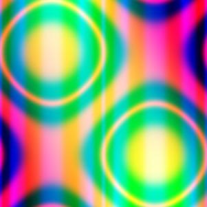
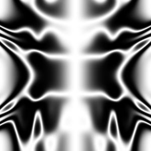
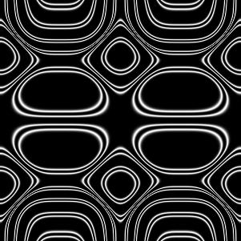

Due by 11:59 pm on Monday, May 1st, 2017.
NOTE: To get the code provided for problem 2 to work on Windows/Mac please install ImageMagick Remember that this is only to enable you to play with the assignment at home.
Overview
The objective of this assignment is for you to have fun learning about recursion, recursive datatypes, and make some pretty cool pictures.All the problems require relatively little code ranging from 2 to 10 lines. If any function requires more than that, you can be sure that you need to rethink your solution.
The assignment is in the single file
that you need to download, if you wish, by using wget:
$ wget https://ucsd-cse130.github.io/web/static/raw/hw2.mlThe file contains:
- skeleton functions with missing bodies that you will fill in,
- sample tests, and,
- testing code that you will use to check your assignments before submitting.
As before, your task is to replace each expression of the form
failwith "to be written"with the the appropriate OCaml code for each of those expressions.
Note: All the solutions can be done using the purely functional fragment of OCaml, using constructs covered in class, and most require the use of recursion. Solutions using imperative features such as references, while loops or library functions will receive no credit It is a good idea to start this assignment early; ML programming, while quite simple (when you know how), often seems somewhat foreign at first, particularly when it comes to recursion and list manipulation.
Assignment Testing and Evaluation
Your functions/programs must compile and run with ocaml on ieng6.ucsd.edu.
Most of the points, will be awarded automatically, by evaluating your functions against a given test suite. hw1.ml contains a very small suite of tests which gives you a flavor of of these tests.
At any point, on the bash shell, enter:
$ ocaml hw2.mlor if you are in the Ocaml REPL enter:
# #use "hw2.ml" ;;to get a report on how your code stacks up against the simple tests.
The last line of the shell must look like:
130>>Compiled
- : int * int = (SCORE, TOTAL)where SCORE and TOTAL are a pair of integers, reflecting your score and the max possible score on the sample tests.
If instead an error message appears, your code will receive a zero.
If for some problem, you cannot get the code to compile, leave it as is with the failwith ... with your partial solution enclosed below as a comment.
The other lines will give you a readout for each test. You are encouraged to try to understand the testing code, but you will not be graded on this.
Submission Instructions
To submit your homework (on ieng6), enter:
$ tar -zcvf hw2.tgz *.ml *.jpg *.png
$ turnin -c cs130s -p 02 hw2.tgzturnin will provide you with a confirmation of the submission process; make sure that the size of the file indicated by turnin matches the size of your file. See the ACS Web page on turnin for more information on the operation of the program.
Problem #1: Tail Recursion
We say that a function is tail recursive if every recursive call is a tail call whose value is immediately returned by the procedure. See these two handouts for more details on what a tail-recursive function is in Ocaml.
(a) 15 points
Without using any built-in ML functions, write a tail-recursive Ocaml function
val assoc : int * string * (string * int) list -> intor more generally,
val assoc : 'a * 'b * ('b * 'a) list -> 'athat takes a triple (v, k, [(k1,v1);...;(kn,vn)]) and finds the first ki that equals k. If such a ki is found, then the function should return vi, otherwise, the default value v is returned.
Once you have implemented the function, you should get the following behavior at the ML prompt:
# assoc (-1,"william",[("ranjit",85);("william",23);("moose",44)]);;
- : int = 23
# assoc (-1,"bob",[("ranjit",85);("william",23);("moose",44)]);;
- : int = -1(b) 15 points
Without using any built-in ML functions, modify the skeleton for removeDuplicates to obtain a function of type
val removeDuplicates : int list -> int listor more generally,
val removeDuplicates : 'a list -> 'a listsuch that removeDuplicates xs returns the list of elements of xs with the duplicates, i.e. second, third, etc. occurrences, removed, and where the remaining elements appear in the same order as in xs.
For this function only, you may use the library functions List.rev and List.mem. Once you have implemented the function, you should get the following behavior at the ML prompt:
# removeDuplicates [1;6;2;4;12;2;13;6;9];;
- : int list = [1;6;2;4;12;13;9](c) 20 points
Without using any built-in ML functions, or the while or for construct, write a tail-recursive ML function:
val wwhile : (int -> int * bool) * int -> intor more generally,
val wwhile : ('a -> 'a * bool) * 'a -> 'asuch that wwhile (f, x) returns x' where there exist values v_0,…,v_n such that
xis equal tov_0x'is equal tov_n- for each
ibetween0andn-2, we havef v_iequals(v_i+1, true) f v_n-1equals(v_n, false).
Your function should be tail recursive. Once you have implemented the function, you should get the following behavior at the ML prompt:
# let f x = let xx = x*x*x in (xx, xx < 100) in wwhile (f,2);;
- : int = 512(d) 20 points
Without using any built-in ML functions, modify the skeleton for fixpoint to obtain a function
val fixpoint: (int -> int) * int -> intor more generally,
val fixpoint: ('a -> 'a) * 'a -> 'asuch that fixpoint (f, x0) returns the first xi where
xiis equal tyof x_i-1, and, furthermore,f xiis equal toxi
Once you have implemented the function, you should get the following behavior at the ML prompt:
# let g x = truncate (1e6 *. cos (1e-6 *. float x));;
val f : int -> int = fn
# fixpoint (g, 0);;
- : int = 739085
# let collatz n = match n with 1 -> 1 | _ when n mod 2 = 0 -> n/2 | _ -> 3*n + 1;;
val collatz: int -> int = fn
# fixpoint (collatz, 1) ;;
- : int = 1
# fixpoint (collatz, 3) ;;
- : int = 1
# fixpoint (collatz, 48) ;;
- : int = 1
# fixpoint (collatz, 107) ;;
- : int = 1
# fixpoint (collatz, 9001) ;;
- : int = 1Problem #2: Random Art
At the end of this assignment, you should be able to produce pictures of the kind shown below. To do so, we shall devise a grammar for a certain class of expressions, design an ML datatype whose values correspond to such expressions, write code to evaluate the expressions, and then write a function that randomly generates such expressions and plots them thus producing random psychedelic art.
Color Images
 

Gray Scale Images
  
(a) 15 points
The expressions described by the grammar:
e ::= x
| y
| sin (pi*e)
| cos (pi*e)
| ((e + e)/2)
| e * e
| (e<e ? e : e)where pi stands for the constant 3.142, are functions over the variables x,y, which are guaranteed to produce a value in the range [-1,1] when x and y are in that range. We can represent expressions of this grammar in ML using values of the following datatype:
type expr = VarX
| VarY
| Sine of expr
| Cosine of expr
| Average of expr * expr
| Times of expr * expr
| Thresh of expr * expr * expr * exprFirst, write a function
val exprToString : expr -> stringto enable the printing of expressions. Once you have implemented the function, you should get the following behavior at the ML prompt:
# let sampleExpr1 = Thresh(VarX,VarY,VarX,(Times(Sine(VarX),Cosine(Average(VarX,VarY)))));;
- : expr = ...
# exprToString sampleExpr1
- : string = "(x<y?x:sin(pi*x)*cos(pi*((x+y)/2)))"(b) 15 points
Next, write a function
val eval : expr * float * float -> floatsuch that eval (e, vx, vy) returns the result of evaluating the expression e at the point (vx, vy) that is, evaluating the result of e when VarX has the value vx and VarY has the value vy. You should use Ocaml functions like, sin, and cos to build your evaluator. Recall that Sine(VarX) corresponds to the expression sin(pi*x)
Once you have implemented the function, you should get the following behavior at the ML prompt:
# eval (Sine(Average(VarX,VarY)),0.5,-0.5);;
- : float = 0.0
# eval (Sine(Average(VarX,VarY)),0.3,0.3);;
- : float = 0.809016994375
# eval (sampleExpr,0.5,0.2);;
- : float = 0.118612572815Uncomment and execute the line:
let _ = emitGrayscale (eval_fn sampleExpr, 150, "sample") ;;to generate the grayscale image art_g_sample.jpg in your working directory. To receive full credit, this image must look like the leftmost grayscale image displayed above. Note that this requires your implementation eval to work correctly. A message Uncaught exception ... is an indication that your eval is returning a value outside the valid range [-1.0,1.0].
(c) 20 points
Next, you must fill in an implementation for the function
val build: ((int * int -> int) * int) -> exprThe function build is called with the pair of arguments (rand, depth).
randis a random number generator of typeint * int -> int. Each callrand (i,j)returns a random integer betweeniandjinclusive. Use this function to randomly select operators when composing subexpressions to build up larger expressions.depthis a a maximum nesting dept; a random expression of depthdis built by randomly composing sub-expressions of depthd-1and the only expressions of depth0areVarXandVarY.
With this in place you can generate random art using the functions
val doRandomGray : int * int * int -> unit
val doRandomColor : int * int * int -> unitEach function takes as a parameter a triple (depth, seed1, seed2) where depth is the depth of the expression to be generated and seed1, seed2 are two seeds for the random number generator. The functions generate JPEG files called art_g_<depth>_<seed1>_<seed2>.jpg and art_c_<depth>_<seed1>_<seed2>.jpg respectively. The first is a gray scale image, built by mapping out a single randomly generated expression over the plane, and the second is a color image built using three functions for the intensities of red, green and blue.
Play around with how you generate the expressions, using the tips below.
- Depths of 8-12 produce interesting pictures, but play around!
- Make sure your expressions don’t get cut-off early with
VarX,VarYas small expressions give simple pictures. - Play around to bias the generation towards more interesting operators.
Save the parameters (i.e. the depth and the seeds) for your best three color images in the bodies of c1, c2, c3 respectively, and best three gray images in g1, g2 , g3.
(d) 20 points
Finally, add two new operators to the grammar, i.e. to the datatype, by introducing two new datatype constructors, and adding the corresponding cases to exprToString, eval, and build. The only requirements are that the operators must return values in the range [-1.0,1.0] if their arguments (ie VarX and VarY) are in that range, and that one of the operators take three arguments, i.e. one of the datatype constructors is of the form: C of expr * expr * expr You can include images generated with these new operators when choosing your best images for part (c).